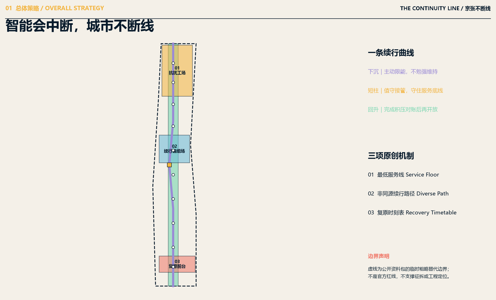
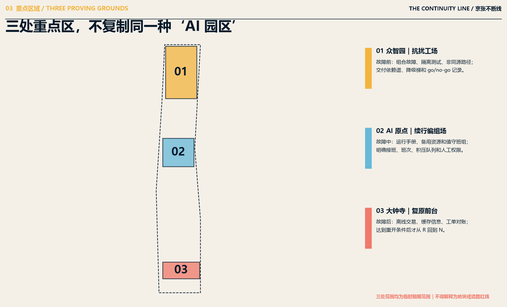
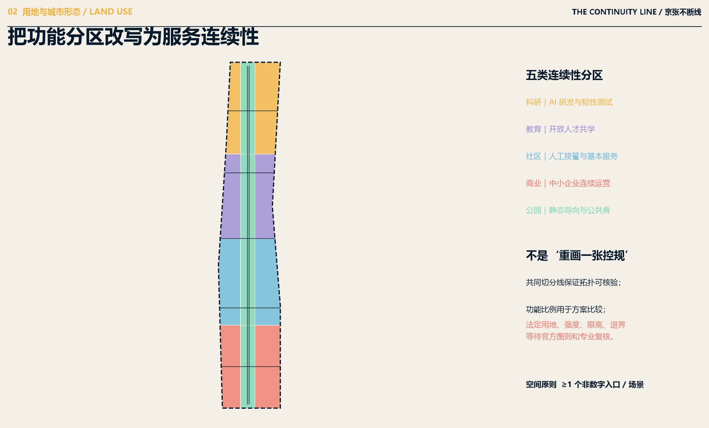
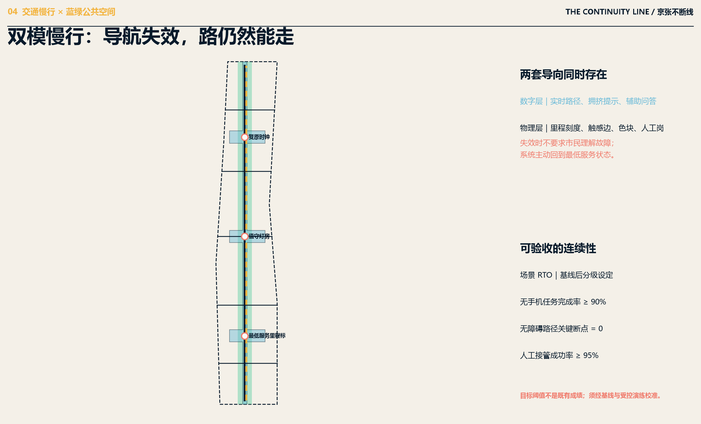
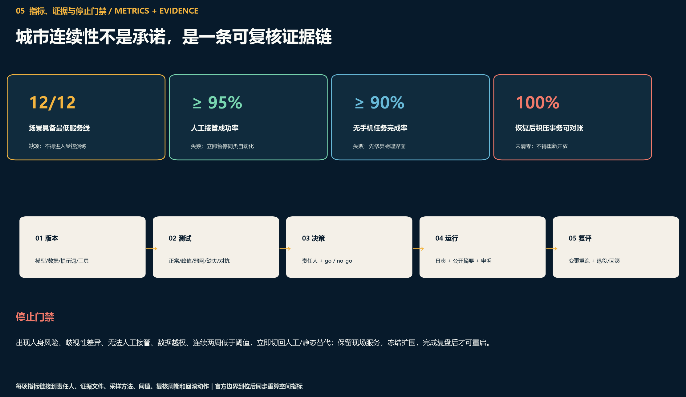

总览地图

三层范围
统筹研究范围
输出服务—资产—数据—供应商—能源—人员依赖谱与开放连续性协议。
总体设计范围
以最低服务脊、五类功能带、东西连接和条件门禁形成可讨论结构。
重点区域
众智园抗扰、AI原点续行、大钟寺复原，形成故障前—中—后的时间链。
重点区域

用地分区

建筑包络只表达能力载体；拆改留、开发强度、建筑高度均等待官方资料与专业确认。建筑不是对现状单体的判断。
交通慢行 × 蓝绿公共空间

数字导向与物理导向同时存在；断网后保留可读、可走、可求助的最低服务。
AI 场景
多模型服务切换｜产业测试
主模型→限能小模型→规则库/人工队列→回放补处理。
云边算力孤岛｜产业测试
云端→边缘→离线批处理→增量对账。
机器人安全泊位｜产业测试
自主→低速限域→人工护送→检查后重启。
楼宇保守模式｜产业测试
AI优化→固定参数→机械控制→技师确认。
出行信息续行｜产业测试
实时→缓存权威信息→固定导视→延误校正。
产品变更回退｜产业测试
灰度→最后可信版本→冻结→受控再发布。
公共服务不断档
智能助手→简表→电话/纸本/人工→积压回填。
无网无障碍路径
数字→离线包→触觉/高对比/人工→路径复核。
健康行政服务
预约翻译→确定性排队→电话/纸本/人工翻译。
小商户营业包
智能订单→本地账本→人工编号→交易对账。
热浪暴雨庇护
AI提示→权威预警→现场观察→设施复查。
Continuity Week
受控模拟异常→三区互援→撤场→复盘。
核心指标

提交的临时范围计算面积
概念绿地/提交范围
概念公共空间/提交范围
更新项目
| 门禁 | 时间 | 项目 | 扩围条件 | 停止/回滚 |
|---|---|---|---|---|
| P0 | 0—6月 | 依赖谱、基线、状态规格；不注入真实故障 | 12/12场景有服务底线 | 依赖不清不得演练 |
| P1 | 6—18月 | 隔离完成6项产业测试和3项公共服务试点 | 接管≥95%，无手机完成≥90% | 切到人工/离线，保护值守人员 |
| P2+ | 18月起 | 三区联运、不断线周与区域接口 | 第三方复评和公众审议 | 积压未对账不得重开 |
任务覆盖
全球案例
7项官方/第一方案例，只转译治理机制，不作为空间控制依据。
人物画像
8类人物，包含值守劳动、无手机、障碍、多语言与企业需求。
场景卡
12张，其中6项产业测试；每张都有最低服务、非同源路径与复原。
品牌与活动
4个公共地标 + 年度“不断线周”，把维护与复原变成公共文化。
自检状态
边界信任、重点区信任、用地拓扑、面积复算、AI故障安全、公共包容、静态可视化、原创版权共8项。仓库确定性、空间、视觉和专业证据校验结果见 self_check.json。
来源
征集公告、智能体任务书、公开资料包与来源登记为项目依据；NIST、IMDA、GDS、EUR-Lex、NCSC、UNDRR、Decidim 仅提供可转化机制。
假设
官方边界、重点区四至、控规、权属、道路、市政、文保、建筑现状等缺口均显式列入 assumptions.json；缺什么就说明什么，不以 AI 猜测补齐。